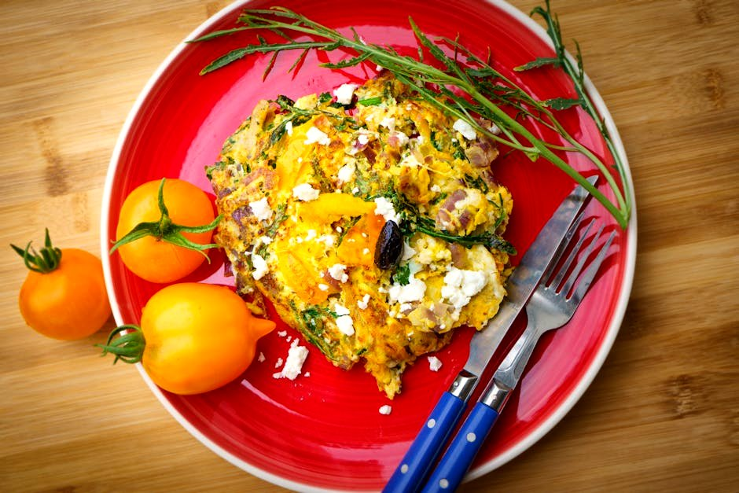
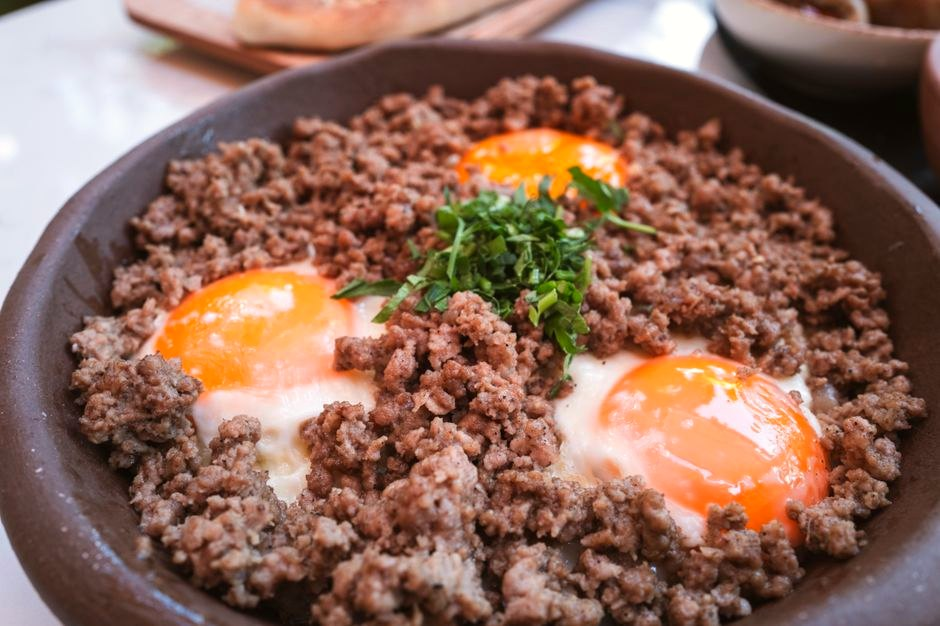
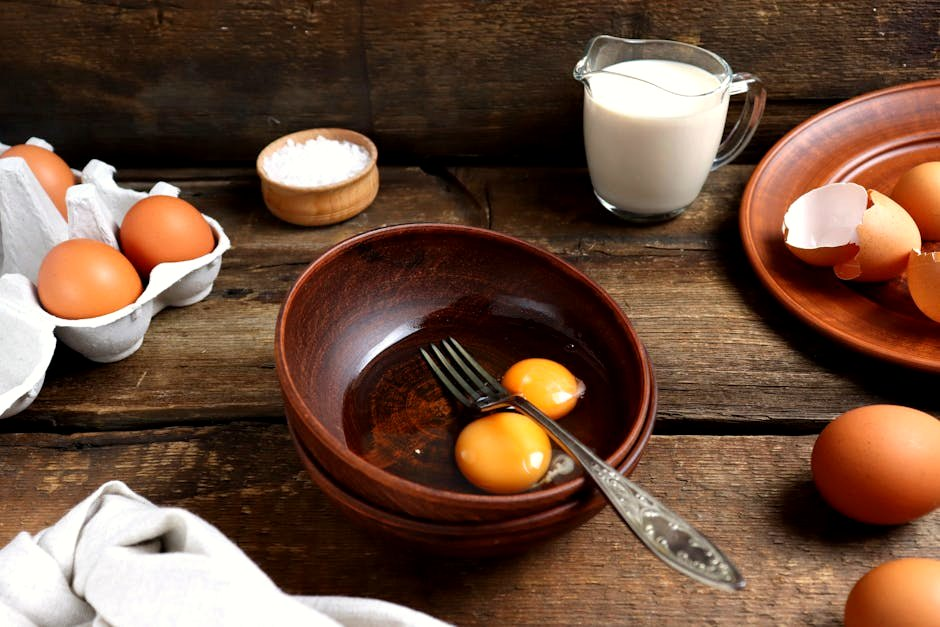
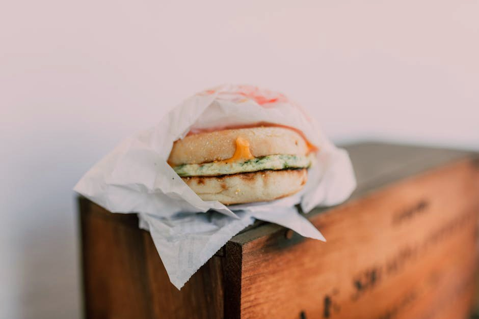
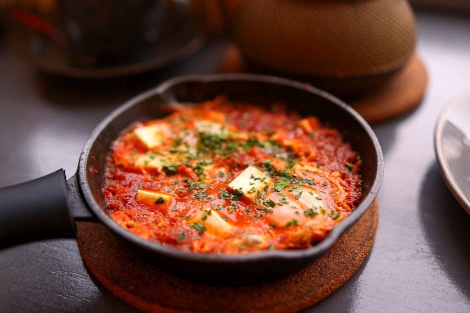

High-Protein Breakfast Ideas
Breakfast is where most people fall 40 g short before lunchtime. Every recipe here front-loads your day with roughly 70 g of protein and very little sugar — from five-minute yogurt bowls to proper chef-made scrambles — so the 3pm crash never turns up.
20 recipes · every one lands ≈70 g of protein with under 20 g net carbs · tap any card for the full recipe, macros & dietary swaps

Spinach & Feta Egg-White Scramble with Turkey Sausage Cottage Cheese & Smoked Salmon Breakfast Bowl
Cottage Cheese & Smoked Salmon Breakfast Bowl
 Greek Yogurt & Berry Protein Bowl
Greek Yogurt & Berry Protein Bowl
 Western Omelette with Egg Whites, Ham & Cheddar
Western Omelette with Egg Whites, Ham & Cheddar
 Fluffy Protein Pancakes
Fluffy Protein Pancakes
 Smoked Salmon & Cream Cheese Egg Roll-Ups
Smoked Salmon & Cream Cheese Egg Roll-Ups
 Chocolate Peanut Butter Protein Smoothie
Chocolate Peanut Butter Protein Smoothie
 Ham & Cheddar Egg-White Muffins
Ham & Cheddar Egg-White Muffins
 Cottage Cheese Protein Waffles
Cottage Cheese Protein Waffles

Ground Turkey, Egg & Pepper Breakfast Skillet High-Protein Tofu Scramble with Edamame & Hemp
High-Protein Tofu Scramble with Edamame & Hemp

Spanish Chorizo & Egg Breakfast Bowl Smoked Salmon & Cream Cheese Omelette
Smoked Salmon & Cream Cheese Omelette
 Chocolate Protein Chia Pudding
Chocolate Protein Chia Pudding
 Greek Yogurt Protein Parfait with Low-Carb Granola
Greek Yogurt Protein Parfait with Low-Carb Granola

Turkey Bacon & Egg-White Breakfast Wrap
Turkey Shakshuka with Feta Protein French Toast
Protein French Toast
 Cottage-Scrambled Eggs with Smoked Salmon
Cottage-Scrambled Eggs with Smoked Salmon
 Korean Kimchi, Egg & Tofu Scramble
Korean Kimchi, Egg & Tofu Scramble
More collections: High-Protein Lunch Ideas · High-Protein Dinner Recipes · High-Protein Snacks · Vegetarian High-Protein Recipes · Quick High-Protein Meals (Under 30 Minutes) · High-Protein, Low-Calorie Meals · High-Protein Meal Prep Recipes